Tucked away in a clearing, just off a hiking track, is the first old mine tunnel I visited in Cyrpus. Past the open chain-link barrier, you'll find cracked wooden beams, rusted metal, and many small collapses.
Mine #1
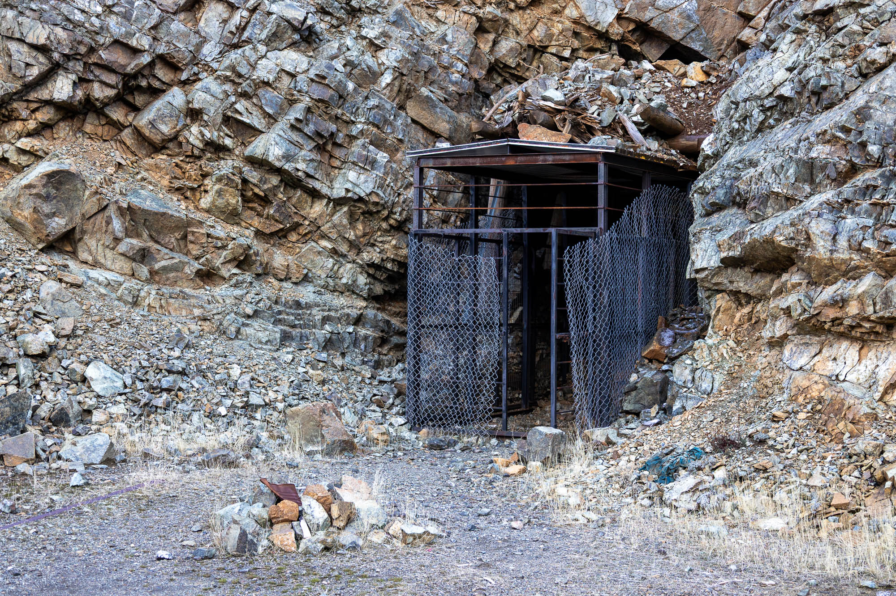
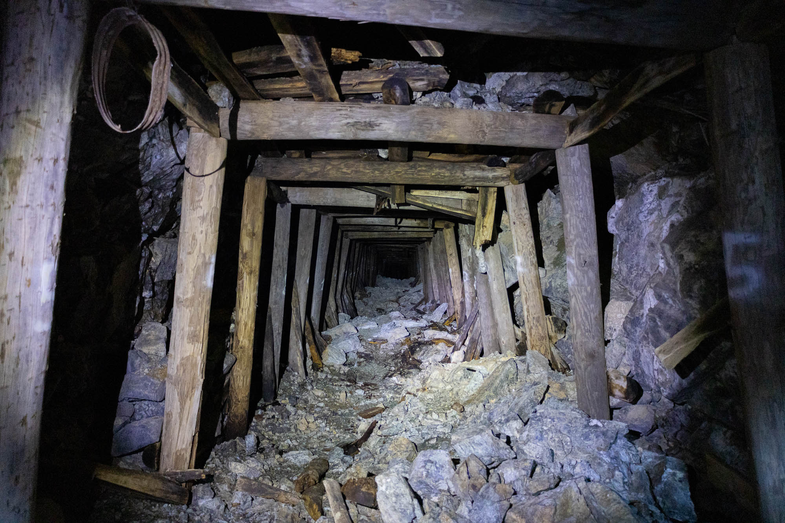
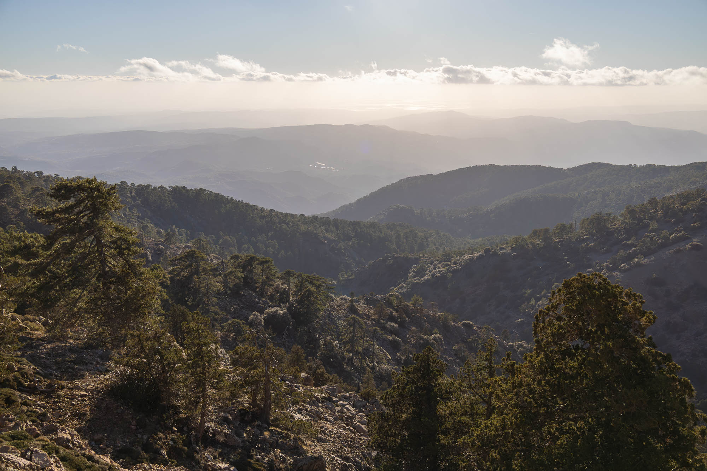
Mine #2
On the far side of the mountain, a nondescript square hole punctures the cliff face. A strong flow of water from inside this mine has kept the timber sets continuously damp, resulting in not a wooden beam remaining useful today.
Stepping over the rotting wood, you can follow a pair of rails a good way in until the water gets too deep.
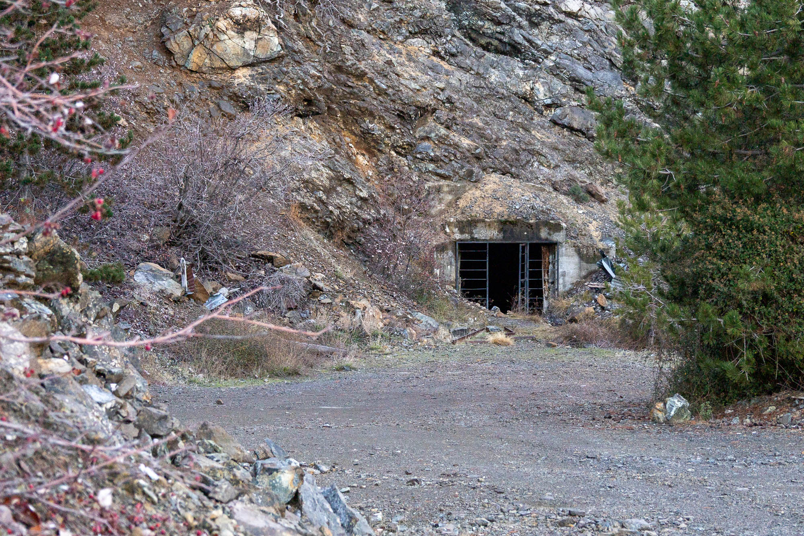
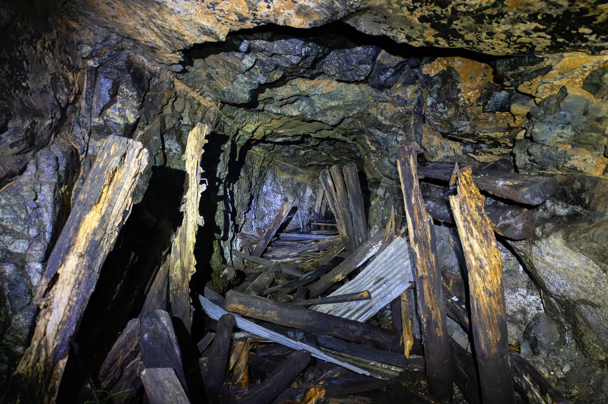
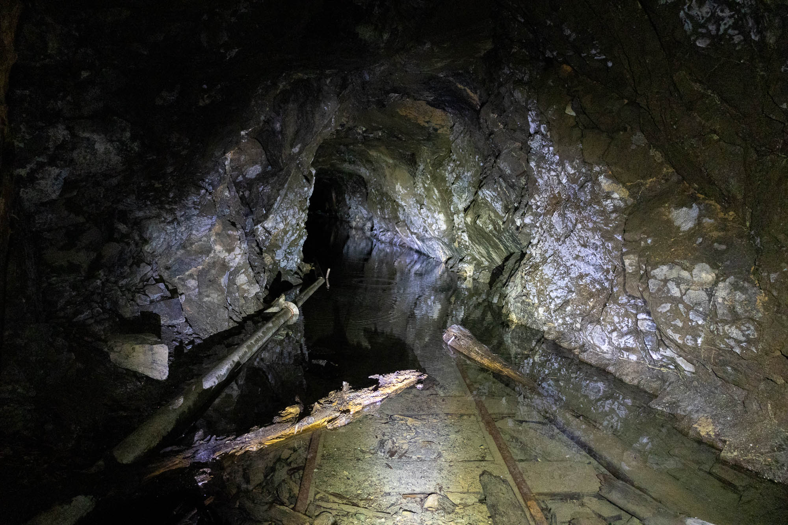
Mine #3
The mine entrance consists of a vertical shaft, sheltered by the remnants of an arched structure that formerly functioned as a hoisting point. Thick safety webbing has been installed here to stop the careless adventurer from falling a considerable distance.
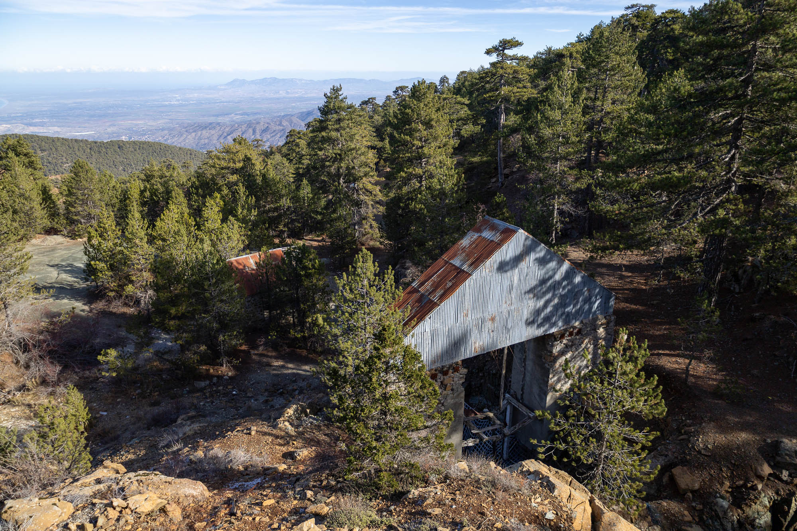
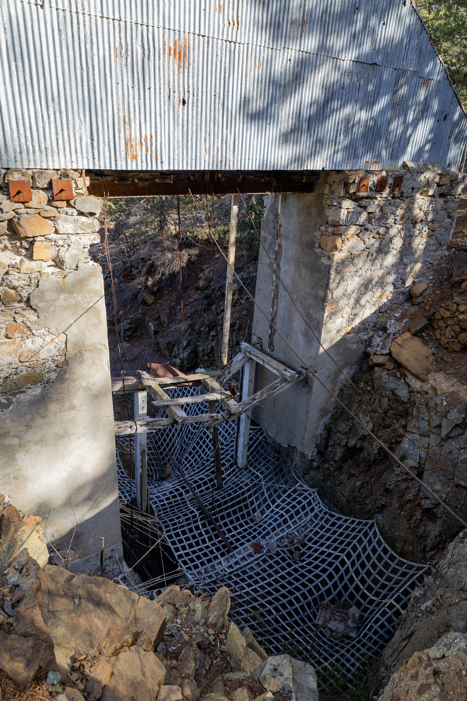
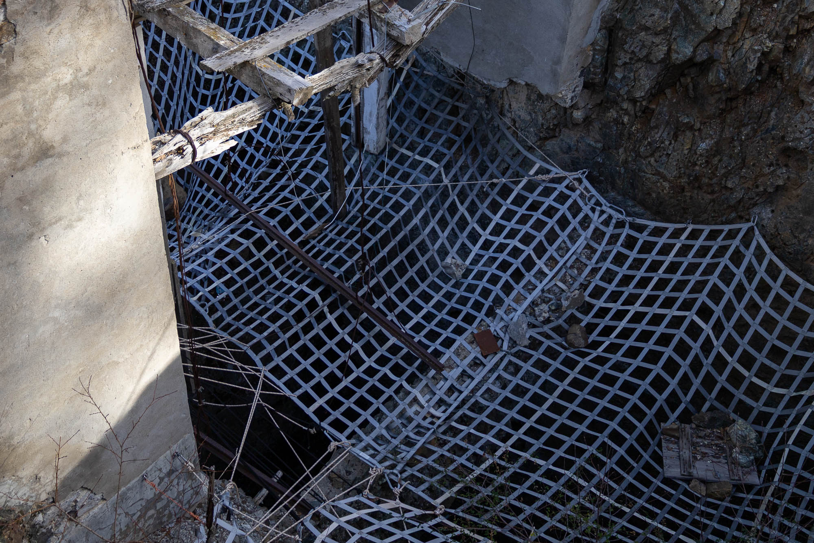
Mine #4
Not far from mine #3, is a more traditional tunnel entrance that has all but completely collapsed. With a bit of trust in the new-ish wooden beams you can squeeze between rocks and into yet another mine tunnel. Quickly the new beams end and you can explore the old mine as far as your courage takes you.
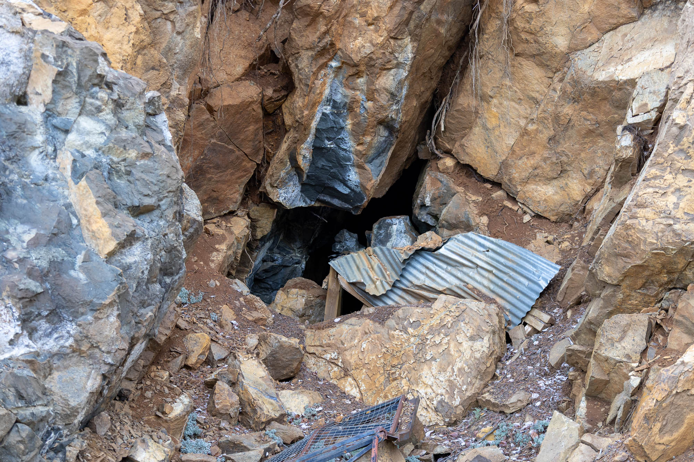
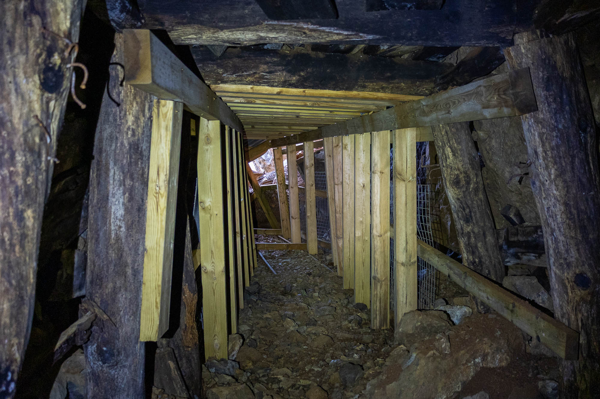
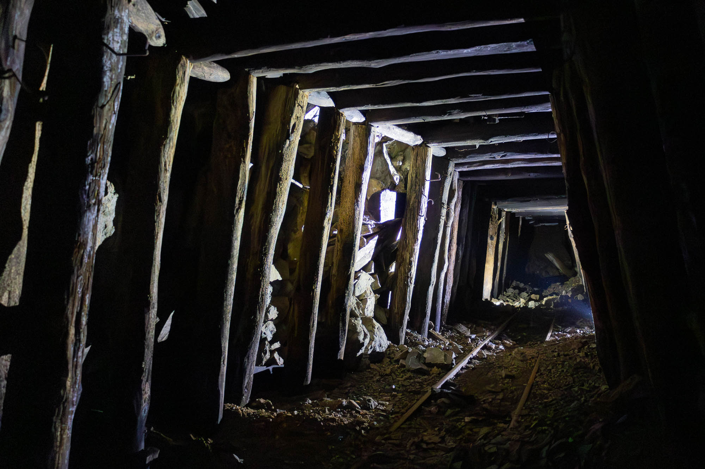